Самые длинные мосты
Список самых длинных мостов
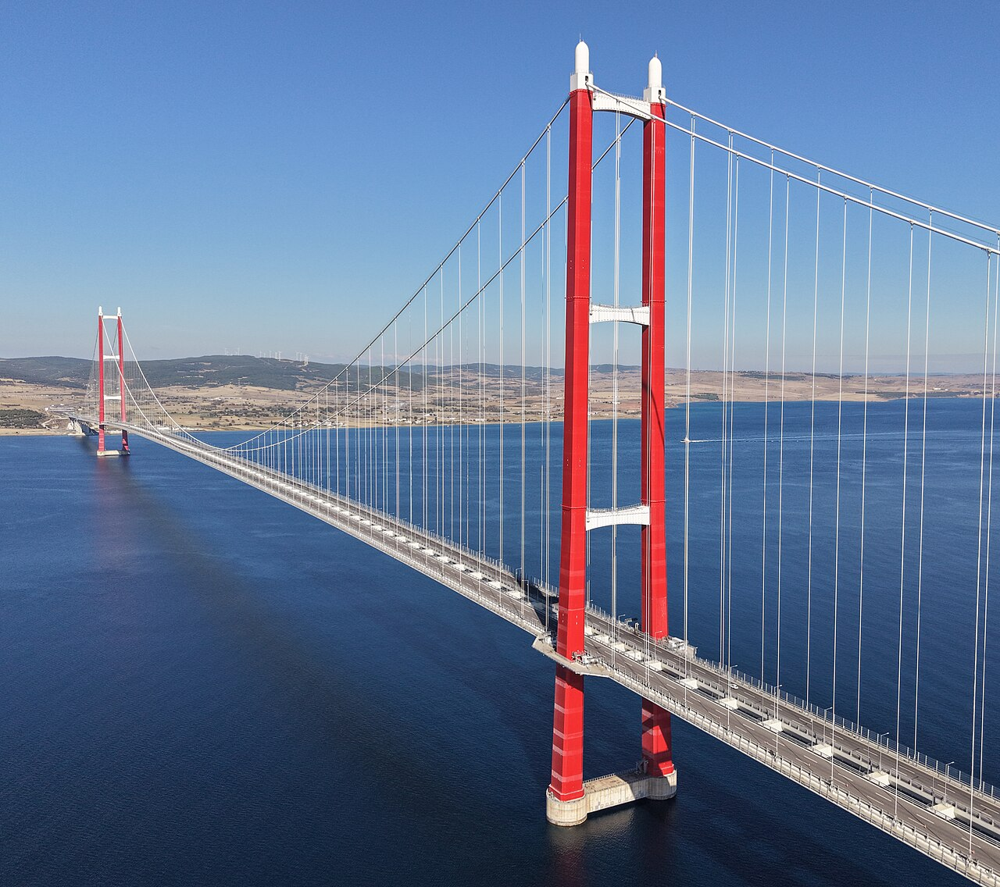
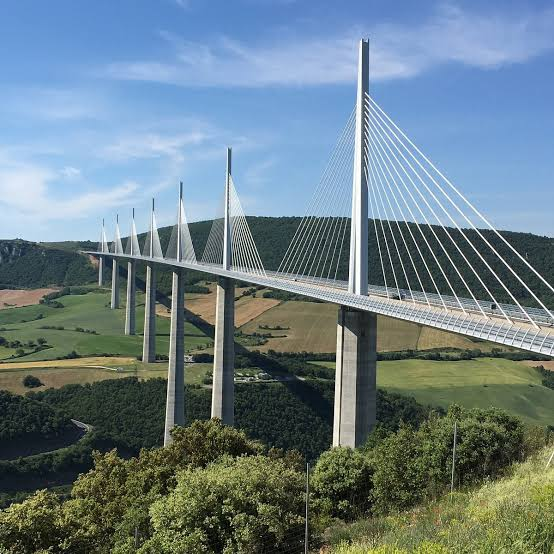
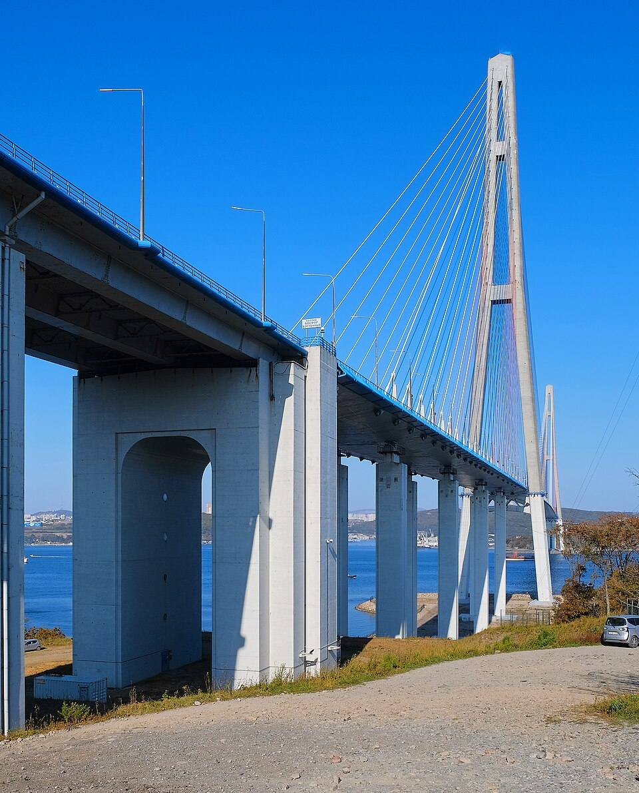
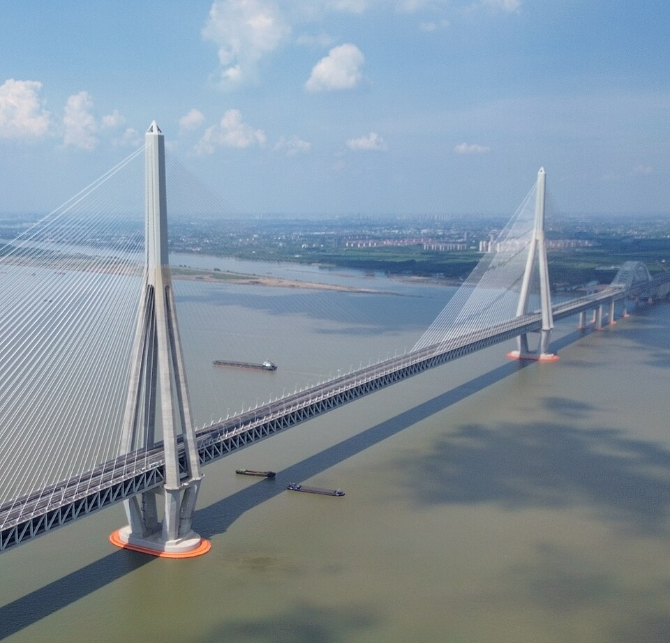
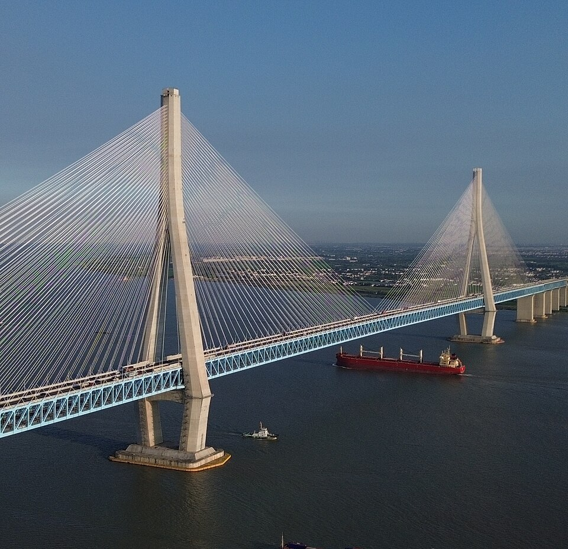
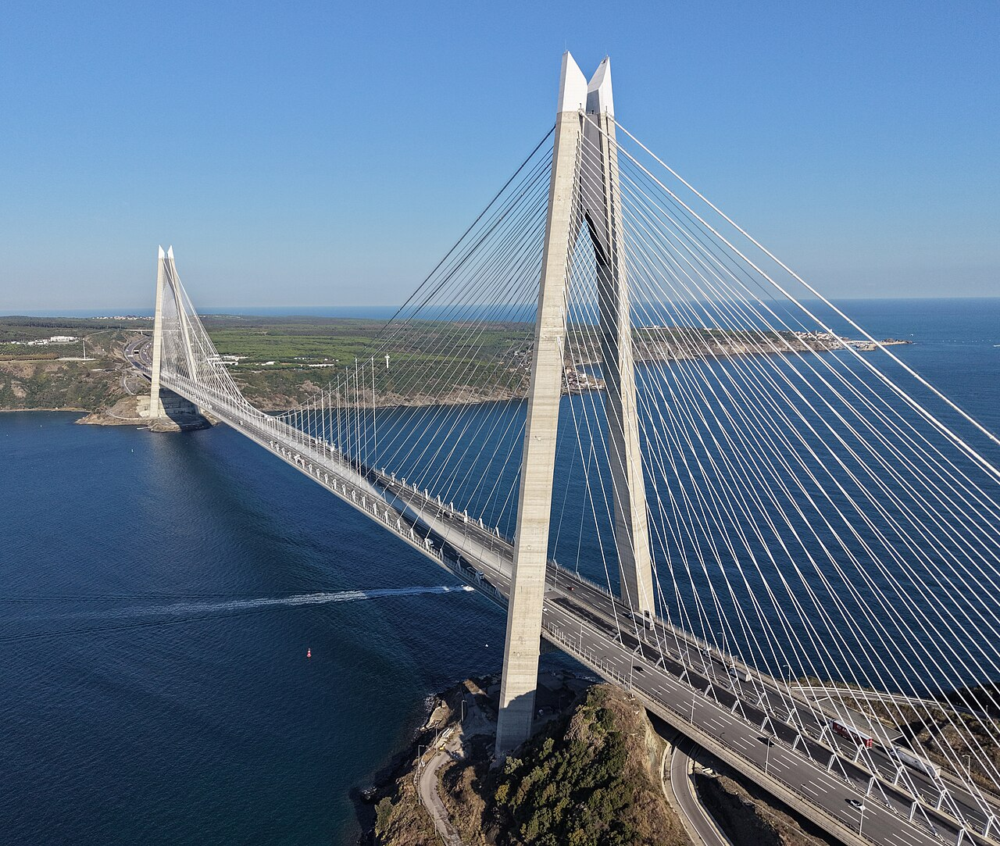
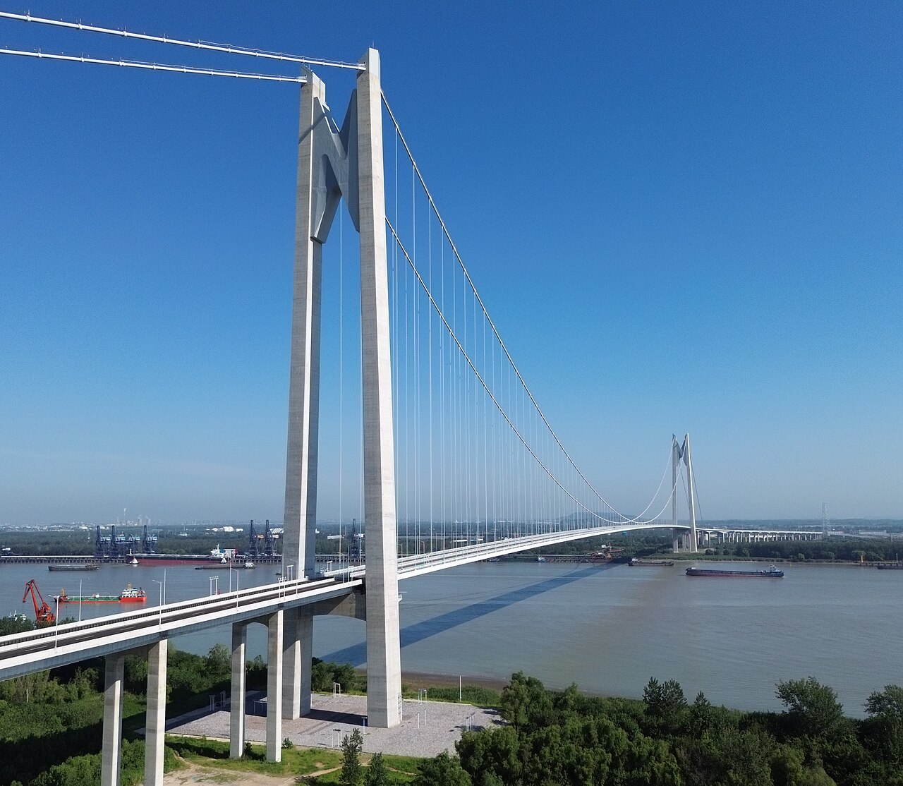
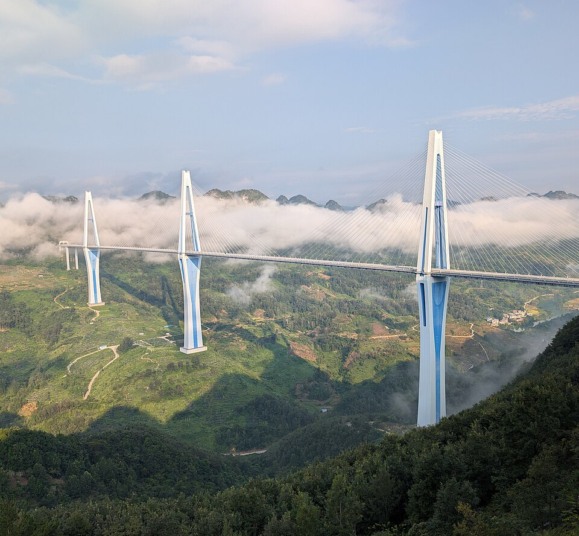
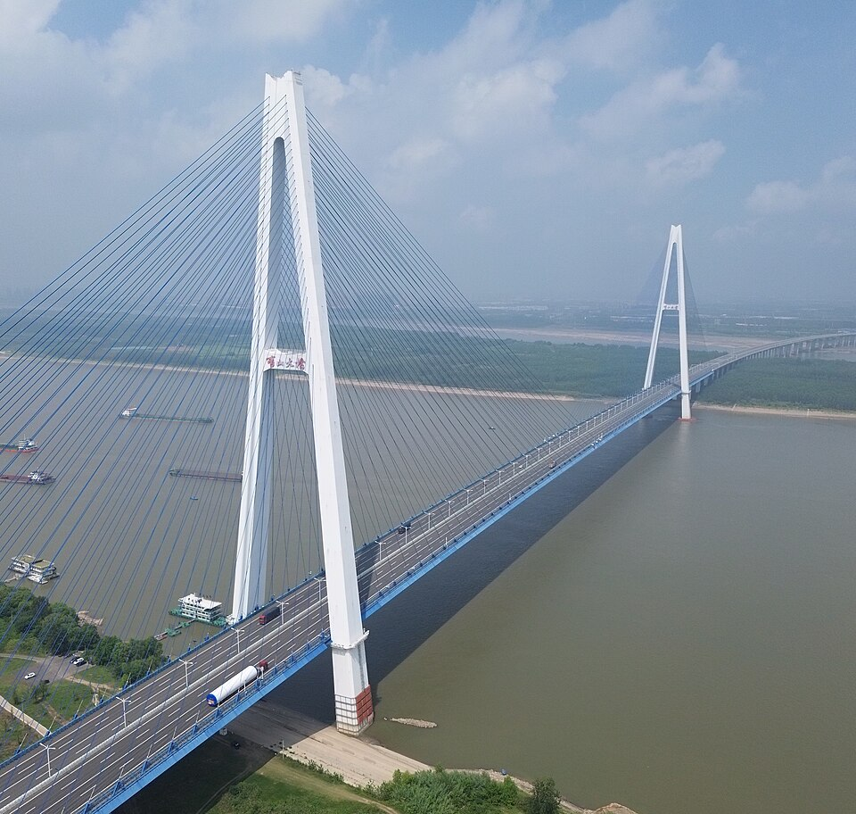
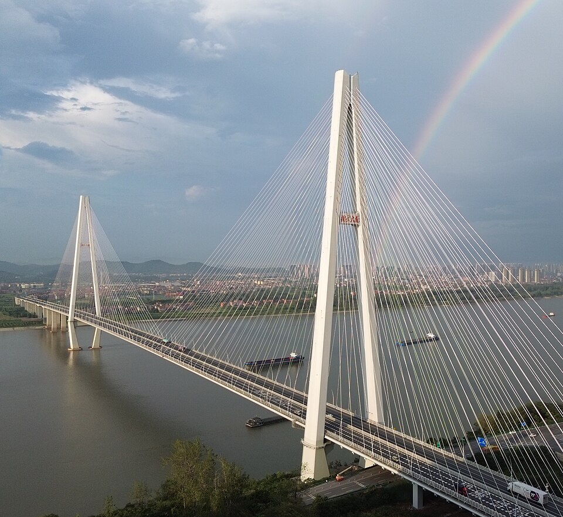
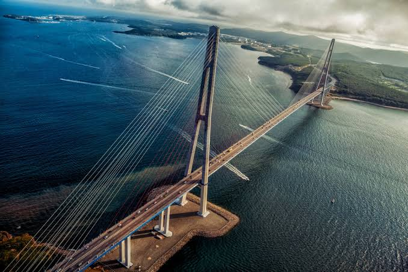
Русский мост во Владивостоке, РоссияРусский мост — один из самых известных мостов России, расположенный во Владивостоке. Он соединяет материковую часть города с островом Русский, проходя через пролив Босфор Восточный.
Мост был открыт в 2012 году и построен к саммиту Азиатско-Тихоокеанского экономического сотрудничества (АТЭС). Его строительство стало важным этапом развития транспортной инфраструктуры Владивостока и острова Русский.
Центральный пролёт моста составляет 1104 метра, а общая длина сооружения вместе с эстакадами — около 3,1 километра. Два высоких пилона поддерживают конструкцию с помощью многочисленных стальных вант, которые распределяют нагрузку и обеспечивают устойчивость моста.
Высота пилонов достигает примерно 320 метров. Благодаря своей конструкции Русский мост относится к крупнейшим вантовым мостам в мире. Он стал одним из символов Владивостока и часто изображается на фотографиях, открытках и туристических материалах, посвящённых городу.
Мост играет важную роль в жизни города, облегчая транспортное сообщение с островом Русский, где расположены кампус Дальневосточного федерального университета, научные учреждения и популярные туристические места.
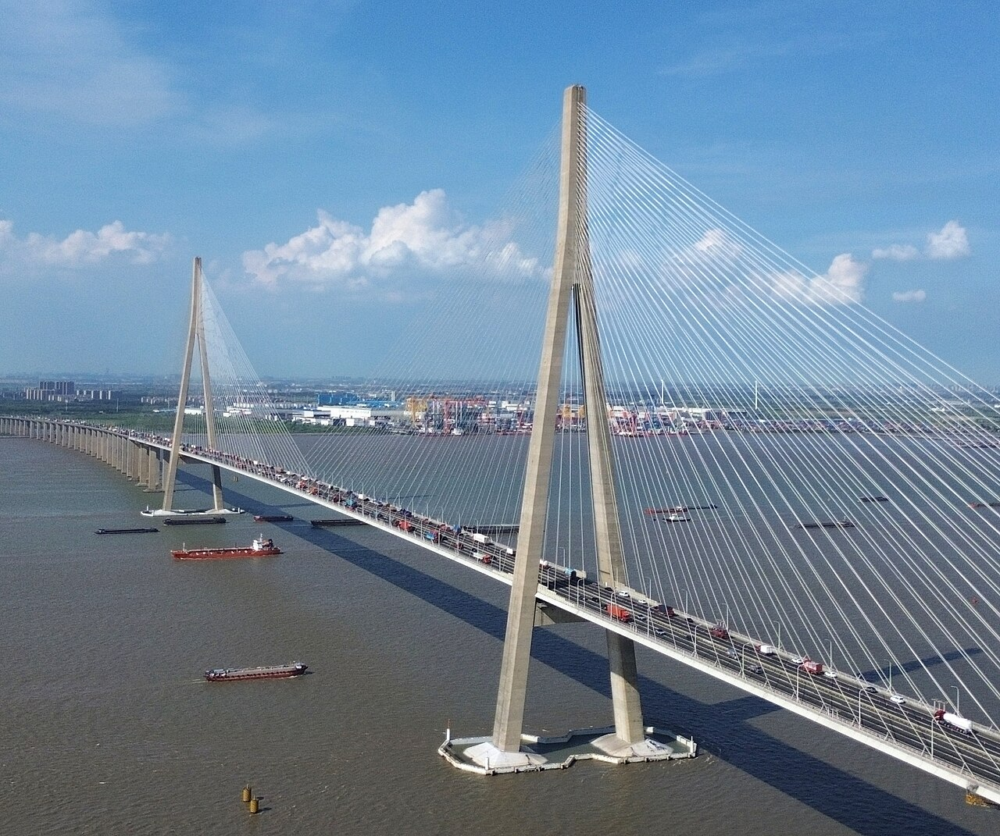
Мост Сутун, КитайМост Сутун — крупный вантовый мост в Китае, расположенный над рекой Янцзы. Он соединяет город Наньтун с районом Чаншу, находящимся недалеко от Сучжоу, и является важной частью транспортной системы восточного Китая.
Мост был открыт в 2008 году после нескольких лет строительства. Его возведение помогло улучшить транспортное сообщение между регионами, облегчило перевозку товаров и способствовало развитию экономики прилегающих территорий.
Центральный пролёт моста составляет 1088 метров, а общая длина сооружения — около 8,2 километра. Конструкция включает высокие пилоны и множество стальных вант, которые поддерживают дорожное полотно и распределяют нагрузку.
Высота главных пилонов достигает примерно 306 метров. На момент открытия мост имел один из самых длинных центральных пролётов среди вантовых мостов мира. Его конструкция позволяет крупным судам проходить по реке Янцзы под мостом.
Мост Сутун имеет большое значение для промышленности и торговли Китая. Он помогает быстрее перевозить грузы между городами, сокращает время поездок и является примером развития современной инженерии и мостостроения.
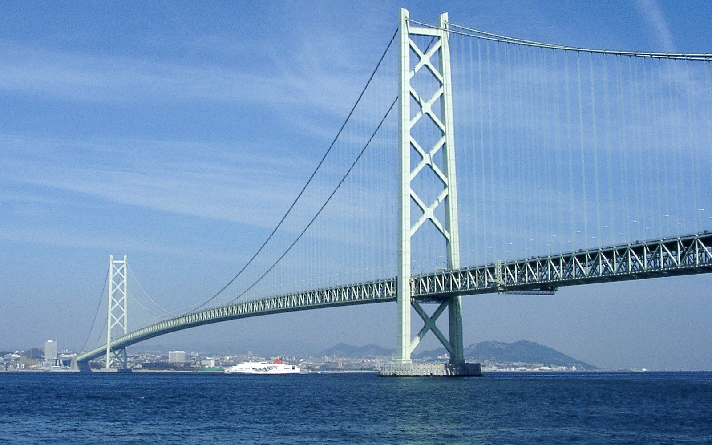
Мост Акаси-Кайкё, ЯпонияМост Акаси-Кайкё — огромный подвесной мост в Японии, соединяющий город Кобе на острове Хонсю с островом Авадзи. Он проходит над проливом Акаси и является важной частью транспортной сети страны.
Строительство моста началось в 1988 году, а движение по нему открылось в 1998 году. Его создание позволило сделать автомобильное сообщение между островами более быстрым и удобным.
Центральный пролёт моста составляет 1991 метр, а общая длина сооружения — около 3911 метров. Две высокие башни поддерживают стальные тросы, на которых закреплено дорожное полотно.
Высота башен над уровнем моря составляет около 297 метров. Мост спроектирован так, чтобы выдерживать сильные ветры, землетрясения и другие природные воздействия, характерные для этого региона Японии.
Акаси-Кайкё является одним из самых известных мостов мира и выдающимся достижением инженерии. Он также стал популярной достопримечательностью, привлекающей туристов своими масштабами и видом на пролив.